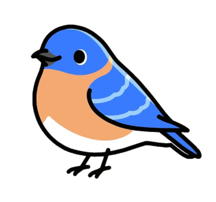

Hi, I am Ravi 
I like writing code, playing poker, watching birds, growing plants, and drinking chai.
⠀
Feel free to reach out at ravi14.bandaru (at) gmail (dot) com!


I like writing code, playing poker, watching birds, growing plants, and drinking chai.
⠀
Feel free to reach out at ravi14.bandaru (at) gmail (dot) com!